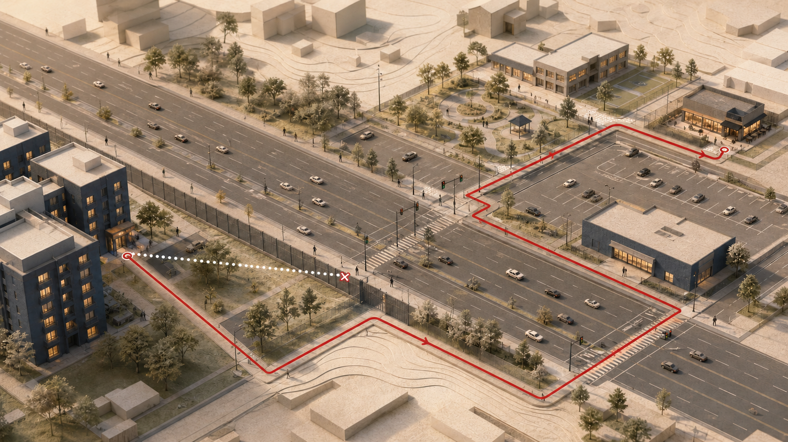
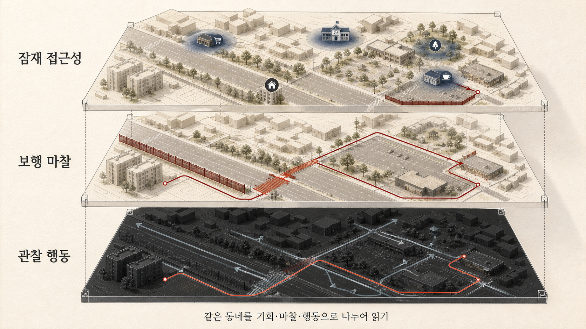

생활권 점수만으로는 왜 실제 보행을 설명할 수 없을까: 접근성·보행환경·행동을 분리하는 법
집 근처에 식료품점과 학교, 공원, 음식점이 많으면 사람들은 실제로 더 많이 걸을까요?
생활권이나 입지를 평가하는 서비스에서는 흔히 주변 시설까지의 거리를 하나의 점수로 만듭니다. 필요한 시설이 가까이 있을수록 자동차 없이 생활하기 좋고, 걸을 가능성도 높다는 가정입니다. 직관적으로는 맞는 이야기예요. 목적지가 멀다면 걸어서 갈 기회부터 줄어드니까요.
하지만 시설이 가까이 있다는 것과 실제로 걷는다는 것은 같은 말이 아닙니다. 목적지까지 가는 길에 교통량이 많을 수도 있고, 도로가 끊겨 있을 수도 있습니다. 지도상으로는 가까워도 건물 출입구가 반대편에 있거나 큰 도로를 건너야 할 수도 있죠. 산책처럼 목적지 없이 이루어지는 보행은 애초에 주변 상점 수와 큰 관계가 없을 수도 있습니다.

지도에서 가까워 보이는 목적지와 실제로 걸어갈 수 있는 경로는 다를 수 있습니다.
Arianna Salazar-Miranda, Emily Talen, Kevin Credit의 연구는 이 차이를 대규모 위치 데이터로 살펴봅니다. 논문의 제목부터 Walkability vs. Walking입니다. 걸을 기회가 있는 동네와 사람들이 실제로 걷는 동네가 얼마나 일치하는지 묻습니다.
Walkability는 기회이고, Walking은 행동이다
이 연구에서 Walkability는 주변 시설에 얼마나 쉽게 접근할 수 있는지를 뜻합니다. 연구진은 식료품점, 음식점, 소매점, 학교, 공원 등 10개 시설 범주를 거리감쇠 방식으로 결합한 Walkable Accessibility Score(WAS)를 사용했습니다. 점수의 범위는 0에서 100입니다.
이 점수가 측정하는 것은 보행 자체가 아니라 걸어서 도달할 만한 목적지가 주변에 존재하는가입니다. 다시 말해 보행의 기회입니다.
반면 Walking은 위치 기록에서 관찰된 이동 행동입니다. 주변에 시설이 많더라도 주민이 자동차를 타면 접근성 점수는 높고 실제 보행은 적을 수 있습니다. 반대로 시설 접근성이 낮은 곳에서도 운동이나 산책을 위해 많이 걸을 수 있습니다.
이 구분은 생활권 점수를 해석할 때 특히 중요합니다. “15분 안에 필요한 시설이 있다”는 사실만으로 그 시설까지 안전하고 편하게 걸어갈 수 있다거나, 주민이 실제로 걷는다거나, 전체 신체활동량이 많다고 말할 수는 없습니다.
접근성은 행동이 일어날 수 있는 가능성을 보여주지만 행동 그 자체는 아닙니다.
4만여 개 근린과 스마트폰 위치 데이터로 비교했다
연구 대상은 미국의 272개 도시권에 포함된 43,042개 census tract입니다. Census tract는 미국 인구조사에서 사용하는 지역 단위로, 이 연구에서는 근린을 분석하는 공간 단위로 쓰였습니다.
보행 데이터는 2019년 1월부터 4월까지 위치 공유에 동의한 기기에서 수집한 비식별 위치 기록입니다. 참여 앱을 통해 수집된 기기가 월별 약 1,810만 대 포함됐습니다. 여기서 1,810만은 미국인을 대표하도록 추출한 고유 인구수가 아니라 위치 공유에 동의한 기기의 월별 규모입니다.
연구진은 15분 이상 머문 지점 사이의 이동 구간을 하나의 trip으로 나누고, 평균속도가 초속 1.5m 미만인 이동을 보행으로 분류했습니다. 이렇게 계산한 보행 trip 수와 시간, 거리를 거주지 tract 수준으로 집계했습니다.
보행 목적은 직접 관찰한 것이 아니라 공간 경계를 이용해 추론했습니다. 출발지와 도착지가 서로 다른 census block group, 즉 CBG에 있으면 목적지형 보행으로, 같은 CBG 안에서 시작하고 끝나면 여가형 보행으로 분류했습니다.
여기서부터 이미 주의가 필요합니다. 이 분류는 사용자가 “출근 중”이나 “산책 중”이라고 직접 기록한 결과가 아닙니다. 동네 안 편의점에 다녀온 이동은 여가형으로, 다른 CBG에서 끝난 산책은 목적지형으로 분류될 수 있습니다.
접근성은 전체 보행보다 목적지형 보행을 더 잘 설명했다
연구 결과, 시설 접근성 점수인 WAS는 tract 사이 **전체 보행 trip 변이의 25%**와 연관됐습니다. 표본 내 tract 수준 관계의 결정계수가 였다는 뜻입니다.
이는 접근성과 보행 사이에 관계가 없다는 결과는 아닙니다. WAS가 높은 tract일수록 대체로 보행 trip도 많았습니다. 다만 접근성 하나로 설명되지 않는 차이가 훨씬 많이 남았고, 점수가 높은 지역과 낮은 지역의 실제 보행 분포도 상당히 겹쳤습니다.
보행 목적을 나누면 차이가 더 선명해집니다.
목적지형 보행에서는 접근성 점수와의 관계가 이었습니다. 주변에 목적지가 많고 가까울수록 그곳에 가기 위한 보행도 많은 경향이 나타난 것입니다. 반면 여가형 보행과 접근성 점수의 관계는 에 그쳤습니다. 목적지의 가까움을 측정하는 점수가 목적지 없이 이루어질 수 있는 산책이나 운동을 거의 설명하지 못한 셈입니다.
전체 보행 trip 가운데 여가형은 69%, 목적지형은 31%였습니다. 그러나 이 비율의 분모는 trip 수입니다. 시간으로 보면 여가형 47%, 목적지형 53%였고, 거리로 보면 여가형 40%, 목적지형 60%였습니다. 여가형 trip은 횟수는 많지만 목적지형 trip보다 짧은 경향이 있었던 것입니다.
따라서 “전체 보행의 69%가 여가 활동이었다”고 넓게 표현하면 수치의 의미가 달라집니다. 정확하게는 관찰된 보행 trip 수의 69%가 연구의 공간 기준상 여가형으로 분류됐다고 해야 합니다.
이 결과가 보여주는 것은 접근성 점수가 틀렸다는 사실이 아닙니다. 점수의 측정 대상이 제한되어 있다는 사실입니다. 시설 접근성은 목적지형 보행과 상대적으로 강하게 연관됐지만, 여가형을 포함한 전체 보행 행동을 대신하지는 못합니다.
가까움을 실제 보행으로 바꾸는 과정에는 마찰이 있다
같은 수준의 시설 접근성을 갖춘 지역이라도 실제 목적지형 보행과의 연관 정도는 주변 환경에 따라 달랐습니다. 연구진이 살펴본 조건 가운데 눈에 띄는 것은 교통량, 도로 연결성, 건물 setback이었습니다.
교통량이 많은 곳에서는 WAS가 높아질 때 목적지형 보행이 함께 증가하는 정도가 상대적으로 약했습니다. 목적지가 가까워도 차량이 많고 횡단 부담이 크다면 걷는 선택이 어려워질 수 있습니다.
도로 연결성도 차이를 만들었습니다. 교차로가 많아 경로 선택지가 풍부한 곳에서는 접근성과 목적지형 보행의 관계가 더 강했고, 막다른 길의 비중이 높은 곳에서는 약했습니다. 직선거리상 가까운 목적지도 도로망이 끊겨 있으면 실제 경로는 길어질 수 있기 때문입니다.
Building setback은 건물이 도로에서 얼마나 뒤로 물러나 있는지를 나타냅니다. 건물이 가로 가까이에 있는 지역에서는 접근성 점수와 목적지형 보행의 관계가 더 강했고, 넓은 주차장이나 전면 공간을 사이에 둔 지역에서는 약했습니다.
이 조건들은 접근성을 실제 보행으로 옮기는 과정의 전환 마찰로 이해할 수 있습니다. 다만 연구는 마찰을 줄이면 보행이 그만큼 증가한다는 인과효과를 입증하지 않았습니다. 예를 들어 큰 도로의 비중이 높은 곳에서 접근성과 보행의 관계가 강하게 나타난 결과도 큰 도로 자체가 보행을 만든다는 뜻은 아닙니다. 상점이 모인 상업가로의 특성이 함께 반영됐을 수 있습니다.
이 연구가 말하지 못하는 것도 분명하다
첫째, 이 연구는 관찰적·횡단면 분석입니다. 시설 접근성이 높은 동네가 보행을 늘렸을 수도 있지만, 걷기를 선호하는 사람이 그런 동네를 선택했을 수도 있습니다. 대중교통, 주차, 범죄와 안전 인식, 보도 품질, 날씨 같은 누락 요인도 결과에 영향을 줄 수 있습니다. 그러므로 시설이나 도로환경을 바꾸면 논문에 제시된 비율만큼 보행이 증가한다고 해석해서는 안 됩니다.
둘째, 스마트폰 데이터의 대표성에 한계가 있습니다. 위치 공유에 동의한 특정 앱 이용자가 대상이므로 스마트폰 미보유자나 위치 공유를 꺼리는 사람은 빠집니다. 고령자, 아동, 저소득층 등 집단별 행동이 충분히 반영됐는지도 별도로 살펴봐야 합니다.
셋째, 목적 분류는 CBG 경계 통과 여부에 기반한 간접 추론입니다. 개별 trip의 실제 목적을 확인한 분류가 아닙니다. 행정·통계 경계의 크기와 모양이 결과에 영향을 주는 문제도 남습니다.
넷째, 분석 결과는 거주지 tract의 평균으로 집계됐습니다. 사람이 실제로 걸은 장소가 거주지 밖일 수 있고, tract 내부에서도 보도나 횡단환경은 균일하지 않습니다. 지역 평균 관계를 개인의 행동으로 그대로 옮길 수 없습니다.
다섯째, 관찰 기간은 2019년 1월부터 4월까지입니다. 겨울과 초봄만 포함하므로 계절과 지역별 기후의 영향을 분리하기 어렵습니다.
마지막으로 현재 확인한 10쪽짜리 본문 PDF에는 연구가 인용하는 Supplementary Information과 Table S1–S2, Fig. S1–S7이 포함되어 있지 않았습니다. 일부 변수의 정확한 산식과 추가 강건성 분석은 보충자료를 확보한 뒤 확인해야 합니다.
생활권 제품에는 하나의 점수보다 세 개의 층이 필요하다
여기서부터는 논문의 직접 결론을 옮기기보다, 연구 결과를 생활권 데이터 제품의 지표 구조로 확장해 본 제안입니다.

같은 동네를 시설의 가까움, 실제 경로의 마찰, 관찰된 보행 행동으로 나누어 읽을 수 있습니다.
모든 정보를 하나의 ‘걷기 좋은 동네 점수’로 합치기보다 적어도 세 층을 분리하는 편이 좋습니다.
잠재 접근성
첫 번째 층은 걸어서 도달할 수 있는 기회입니다.
어떤 시설이 있는지, 얼마나 가까운지, 제한 시간 안에 몇 개의 목적지에 닿을 수 있는지를 측정합니다. 병원, 약국, 학교, 장보기, 대중교통, 공원처럼 시설 유형을 구분하고, 직선거리보다 실제 보행 네트워크를 사용해야 합니다.
보행 마찰
두 번째 층은 가까운 시설까지 실제로 걸어가는 일을 어렵게 만드는 조건입니다.
교통량과 횡단 대기, 보도 단절, 막다른 길, 경사와 계단, 철도·하천 같은 장벽, 건물 출입구, 단지 담장, 가로와 건물 사이 거리 등을 포함할 수 있습니다. 같은 500m 거리라도 이 조건에 따라 실제 보행시간과 체감 난이도는 크게 달라집니다.
관찰 행동
세 번째 층은 사람들이 실제로 얼마나, 왜 걷는지입니다.
목적지형과 여가형 보행을 나누고, trip 수뿐 아니라 시간과 거리도 함께 봐야 합니다. 거주자·근무자·방문자를 구분하고, 표본의 대표성과 관찰 시점도 표시해야 합니다.
세 층을 하나의 숫자로 다시 합치면 원인에 가까운 지표와 결과 지표가 뒤섞입니다. 접근성은 높은데 행동이 낮은 지역과, 접근성은 낮지만 여가형 보행이 활발한 지역이 같은 최종 점수에 가려질 수도 있습니다. 종합 순위 하나보다 세 층을 나란히 보여주는 진단형 대시보드가 더 유용한 이유입니다.
한국에 적용하기 전에 무엇을 확인해야 할까
미국 도시권에서 얻은 결과를 한국에 그대로 적용할 수는 없습니다. 고밀도 주거, 대중교통 이용, 아파트 단지 구조, 상가 배치와 보행 네트워크가 다르기 때문입니다.
먼저 한국 생활에 맞는 시설 체계를 다시 정의해야 합니다. 편의점과 전통시장, 병원·약국, 어린이집과 학원, 주민센터와 복지시설, 버스정류장과 지하철 출입구까지 포함할 필요가 있습니다. 시설 중심점이 아니라 실제 출입구와 영업시간도 중요합니다.
보행경로에는 횡단보도와 신호 대기, 육교·지하도, 경사와 계단, 아파트 단지 출입구와 담장 같은 조건을 반영해야 합니다. 특히 지도상으로 가까운 시설이 단지 출입구 구조 때문에 실제로는 멀어지는 사례를 검증해야 합니다.
행동 데이터도 앱 위치 기록 하나를 정답으로 삼기보다 가구통행실태조사, 보행량 계수, 대중교통 승하차, 표본 이동일지 등과 교차검증하는 편이 안전합니다. 목적 분류 역시 행정경계 통과 여부만 보지 말고 POI 체류, 이동 궤적, 시간대와 반복 패턴을 함께 사용한 뒤 사람이 기록한 목적과 비교해야 합니다.
생활권 점수는 필요합니다. 다만 그 점수가 알려주는 것은 주로 걸을 만한 목적지가 가까이 있는가입니다. 실제로 걸어갈 수 있는지와 사람들이 실제로 걷는지는 별도의 질문입니다.
좋은 생활권 지표는 이 차이를 감추기보다 보여줘야 한다고 생각합니다.
Sources
- Arianna Salazar-Miranda, Emily Talen, Kevin Credit, “Walkability vs. Walking: Testing the role of proximity in urban environments,” Landscape and Urban Planning 277 (2027), 105756. DOI
- ScienceDirect article page